A Norse settlement and army game, drawn entirely with ThorVG WebCanvas in the browser.
Step through with Space or the arrow keys. Every clip loops silently while it is on screen; clips marked ♪ carry the game's own sound: unmute them with their speaker button.
Six narrated panels on a 1600 × 900 board, drawn as vector shapes. The fighters were traced from design sheets and have no rig.
A design sheet: Odin in three poses, coiled, the thrust, the thrust held.
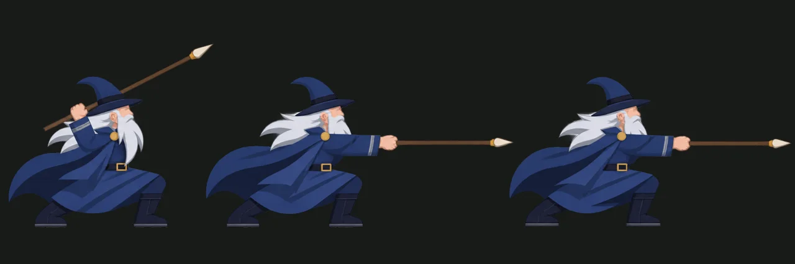
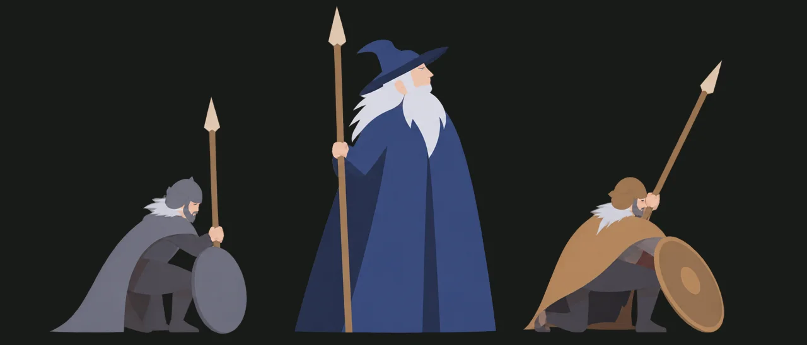
Vectorised: the sheet traced into flat filled paths by a vectorizer tool, numbered back to front.
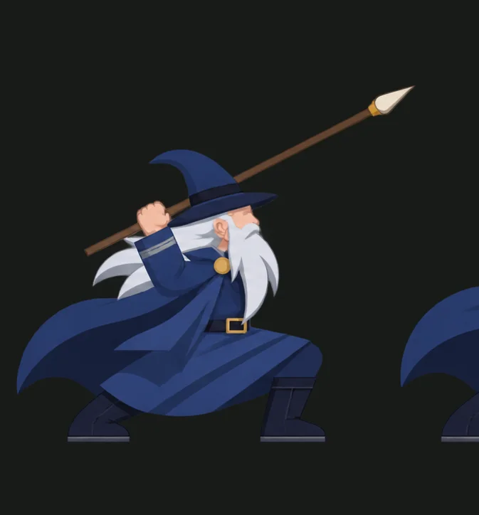
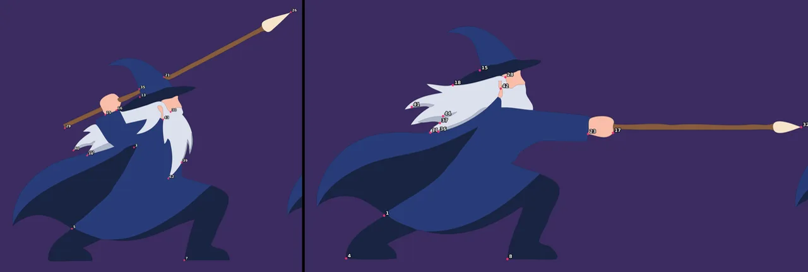
No rig: the fighters have no bones; the blow is three traced drawings shown in turn over the same planted boots.
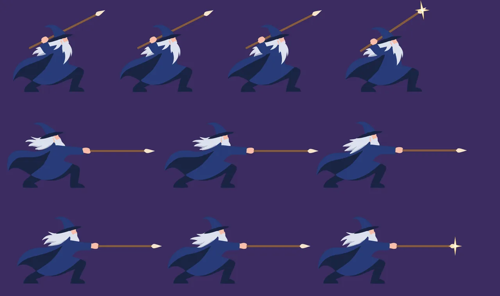
Motion without joints: cloak and hair outline points ride a travelling wave that dies away at a guard line.
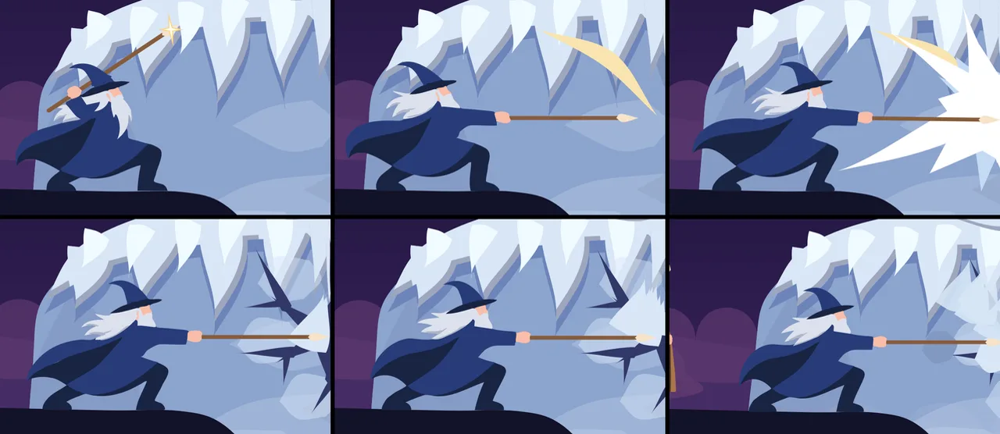
saga-fighters.ts (Streamer, Flowing) · tests/regression/saga-fighters.test.tsThe finished panel in the game: the slaying, at its real pace with its sound.
saga-creation-panels.ts (slayingPanel) · intro-saga.tsSix panels tell the story: the void, the slaying, the shaping of Midgard, what festers below, the gate, the waking.
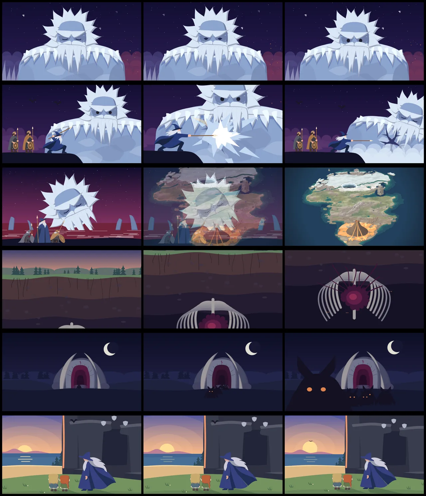
The brothers stand guard; only their cloaks move.
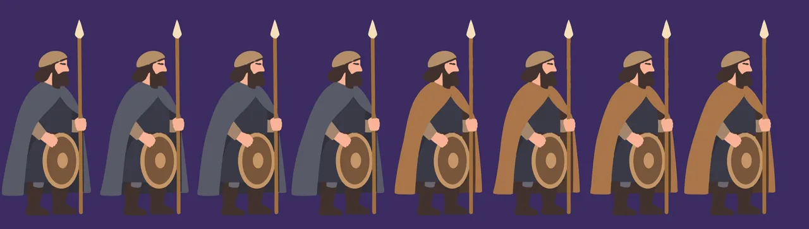
The slaying panel is timed in fractions of its own length: the camera closes on Odin, the spear lands at 0.4, the giant topples.
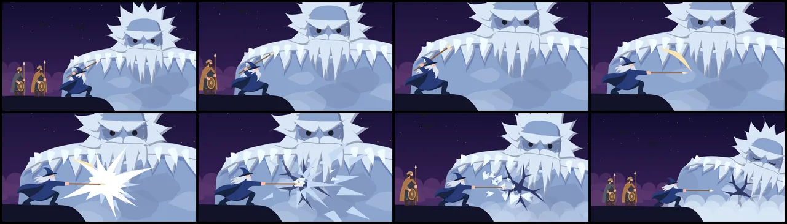
The giant is one head and one body for every panel; mane, beard and shoulder locks each swing about their own root.
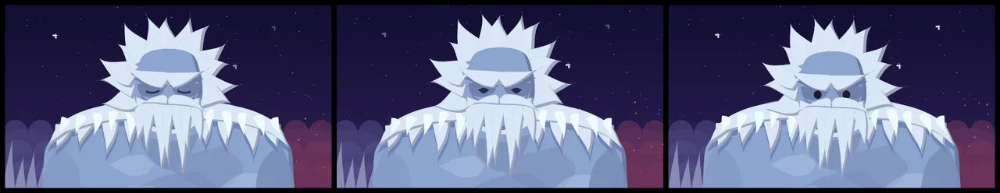
When he is struck, cracks open, hard-edged splinters tumble away, and snow rises as he goes down.
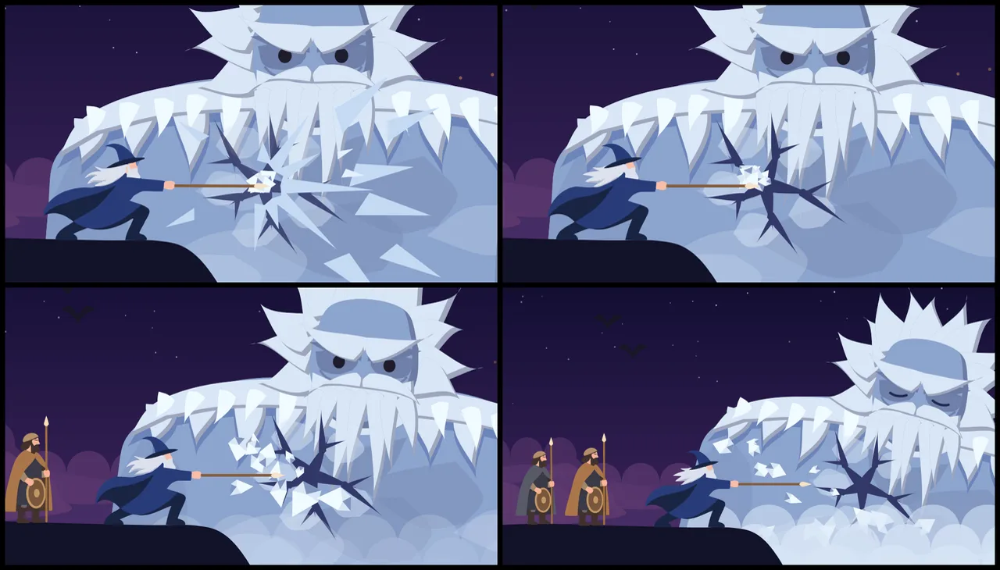
Narration and sound follow the panel: one take per panel starts 0.7 s in, captions are split by phrase length, cues fire at fixed fractions.
intro-saga.ts, public/assets/audio/NOTICE.md.The game builds its own tree of nodes and syncs only what changed into ThorVG each frame.
Each building is a few blocks of data. The game projects them, keeps only the faces the camera can see, orders the pieces and bakes one vector animation that ThorVG plays.
At night each home, market, tavern or workshop adds one warm pool of light to the night mask at its door.world-objects.ts · world-vision.ts
Pick a technique: its clip is drawn from the live renderer's own state.
Each frame sortWorldObjects() tests every paint's box against viewRect(): the view widened by 64 px. A paint outside is not attached, so ThorVG never sees it.
A box wholly under unexplored fog is dropped too; that test (underVeil, nine samples) is cached per fog revision.
The map holds thousands of trees, buildings and figures; a few hundred are on screen.
packages/native-renderer/src/world-depth.tsA 1-D sweep on box x (sort and sweep) finds boxes that overlap; compareBaselines() orders each pair by where their ground baselines meet, so a tall roof never decides it; Kahn's topological sort respects every pair.
orderCache keeps the result: the world's object list is replaced only when the order really changes, so ThorVG's scene is not refilled every frame.
buildTreeRow() puts each tree of a diagonal row (six fixed shapes each) in one SceneNode; peaks the same way (twelve shapes each).
cullTrees() sets a row out of view to opacity 0: the adapter neither attaches nor visits it.
Sway is sent at most 24 times a second and only at zoom 0.45 or closer.
world-trees.ts · tree-painter.ts · mountain-peaks.tsPoseBank.pose() keeps the bone matrices of each clip frame for a creature kind; a pack in step reads the same array.
A figure whose matrices have not changed is not posed again.
Fights of 60 to 150 monsters are normal; each solve is forward kinematics plus foot locking.
rig-pose-bank.ts · monster-figures.tsSkinnedPath.commands() keeps the command list per bone-matrix array; RigSkin.pose() hands that same list to every figure in that pose.
The adapter re-sends a path only when its path version moves.
rig-skinned-path.ts · rig-skin.tsmoveWater() moves the sea bands 12 times a second, updateLava() the lava 6; both halve below zoom 0.5.
Water only translates its bands; nothing is re-contoured. Lava out of view, or unseen, is left alone.
water-motion.ts · lava-motion.tsThe combat layer's JS update with 150 monsters and 60 blows a second must stay under 4 ms a frame; the clip shows the value that test prints when run.
A swarmer's body must stay within 12 shapes, its child list never changing.
Both run with npm test, the project's gate.
Timed: game.render() plus canvas.update().render(), the median of 7 rounds of 30 frames, with no screenshot or simulation step inside the span.
Measured headless on an RTX 3060 Ti while other work loaded the machine (load average about 12 on 12 cores): a camp with 10 residents and 62 monsters, about 9 ms a frame close up and 10 ms zoomed out; the forest fight of 20 residents against 150 monsters, about 31 ms close and 44 ms with the whole fight in view. An earlier figure of 45 and 61 ms had screenshot readback between the timed frames and is withdrawn.
scripts/docs-media/optimisation-videos.mjs · perf-video.mjsWhat this documents: clips of joint angles, blows chosen by weapon, crafting, the bard, worn equipment. Not shown here: reference images and first studies, how a likeness became vector shapes, part layering and garments.
A blow is one shared clip of joint angles; the weapon decides which: a spear thrusts level with both hands, a sword cuts.
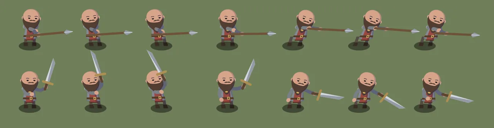
Clips are authored as keys of joint angles and written out as Lottie files that any figure can read.
rig-clip.ts, humanoid-rig.ts.Making an item has its own motions: paring wood with a knife, hammering stone and iron, working bare-handed, then holding the finished piece up.
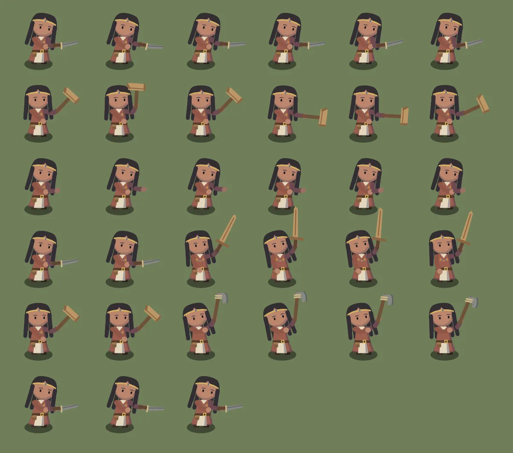
The same motion in the game: at the workbench, facing it, then the piece taken up and looked over.
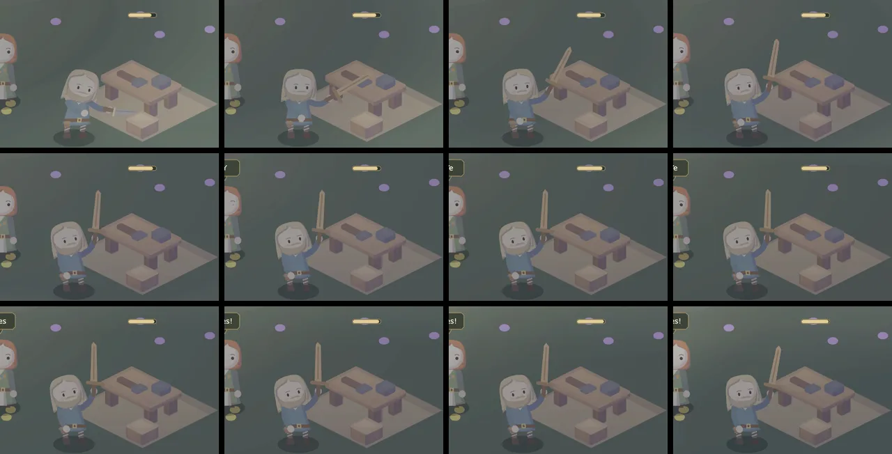
A bard plays while standing or walking: only the arms and head take the playing clip, the walk goes on underneath.
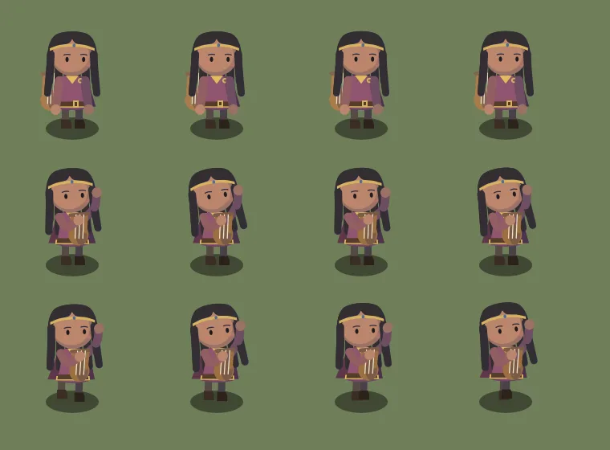
Equipment is drawn from what is really worn: a pack basket shows on the back from either facing.
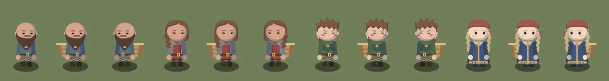
Next: the shared skeleton of the rigged figures, and inverse kinematics.
Every figure is art bound to bones; every motion is a clip of joint angles that any body of the same skeleton can play.
Planted feet, knees that bend the right way.
Pick an effect: the game's clip with its sound, and how it is built in ThorVG, layer by layer. Working galleries: trees and mountains · lava · rain
One dark rect, darkVeil, filled (4, 6, 22) at alpha 170 × night, covers the world.
It is masked by lit, a scene of softDisc radial-gradient discs at every fire, lamp, window and lava cell (and Thor's bolts), with mask(lit, 'inverseAlpha'): the sheet is cut away where the discs are opaque.
A second layer, warmth, adds tinted discs with blend screen; the flicker moves, scales and fades the discs at most 20 times a second.
What is drawn is the cloud's shadow on the ground: 30 clusters of 20 dark puffs, each a circle with a radial-gradient fill fading to 0, squashed to half height.
The clusters are built once and placed over 1150-px tiles by an integer hash; wind moves them by transform.
One 1024 × 512 raw ARGB picture of tileable value noise (4 octaves of fBm over a hash lattice, smoothstep thresholded), shown at 2048 × 1024 and tiled with 44 duplicate()s, mottles the shade: opacity only, no clip, mask or blend.
precipitation is a single ShapeNode whose path is rebuilt every frame: stroked segments for rain (up to 420 in a storm), filled circles for snow (up to 900).
An overcast rect greys the view; splashes (filled circles and stroked rings, a pool of 160) sit in their own layer under the units.
The bolt is filled strips (appendStrip), a pale outer and a white core, with two forks; it shows for the first 0.26 s.
A radial-gradient glow and a flash rect over the view follow a pulse of 1, 0.3, 0.9 and a fade; the layer is rebuilt each frame for 0.9 s.
Normal blend over everything: the weather's bolt does not touch the night mask (Thor's bolts do).
world-weather.ts paintStorm · vector-paint.ts appendStrip · world-thor.tsMarching squares (linear interpolation) turn the depth field into closed polygons; each of the five sea bands is one ShapeNode with a solid fill, no gradient.
The water moves by translating each band, 12 times a second; lava has three bands and breathing spots inside a glow clipped to the molten band, 6 times a second.
At night each lava cell adds its outline and a soft disc to the night mask, and a tint to warmth.
contours.ts region · terrain-painter.ts paintSea · water-motion.ts · lava-motion.ts (paintLava, lightLava)Hover or tap a clip to play it.
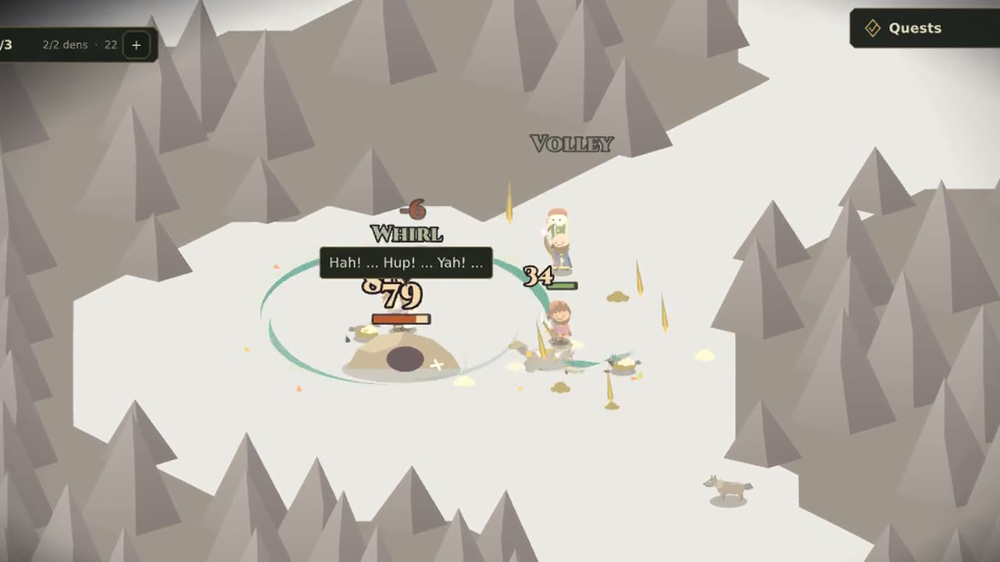
| Family | How it was made | Licence (as the notice states) |
|---|---|---|
| Moment music (dawn, dusk, build, battle) | Procedural; dawn includes an arrangement of Grieg's public-domain Morning Mood | CC0 1.0 |
| Realm loops (8 worlds × 3 floors) | Procedural folk instruments, seeded scores | Project licence (GPL-3.0) |
| Weather, tree fall, collapse, raven | Procedural | CC0 1.0 |
| UI and most effects | Loach's own procedural Norse pack | Project licence |
| Combat effects | Loach recipe layers mixed with Norse pack slices | Project licence |
| Wildlife calls | Procedural; the cat computed separately | Cat CC0; others not recorded per call |
| Bard phrases | Karplus-Strong lyre, D dorian | Project licence |
| Villager and combat voices | Qwen3-TTS, trimmed and levelled by Loach | Project licence (model Apache-2.0) |
| Reference speakers for the weather voices (three) | Dia 1.6B (nari-labs/Dia-1.6B-0626), used as the voices Qwen3-TTS speaks in | Project licence (model Apache-2.0) |
| Opening narration | One designed storyteller voice, Qwen3-TTS, hall echo and levelling | Project licence; exact model revision not recorded |
| The giant's fall (opening) | Four procedural cues, slowed and layered | Project licence |
| Reference art for the saga fighters | Design sheets generated with Codex 6.1, traced into vector paths | As stated by the project author; no separate licence recorded |
Legal text: audio notice · third-party notices · DejaVu · Noto Sans KR · Cinzel · ThorVG WebCanvas
npm test). Which person or agent wrote which part is not recorded in the repository.| Algorithm or technique | Used for | Where |
|---|---|---|
| A* | Walking paths on an 8-connected grid, octile heuristic, no corner cutting | engine/src/walk-paths.ts WalkGrid.path |
| Dijkstra | Routes along the road graph, binary min-heap | engine/src/road-graph.ts route · priority-queue.ts |
| Dijkstra flow field | Monster packs hunting their prey | engine/src/monster-navigation.ts flowTo |
| Flood fill | Connected regions of the walk grid | engine/src/walk-paths.ts |
| Ramer-Douglas-Peucker | Simplifying a freehand road stroke | engine/src/road-network.ts freehandRoad |
| Cubic Bézier | Road curves and skinned outlines | road-network.ts · geometry.ts cubic |
| Catmull-Rom spline | Closed outlines through bone-carried points | native-renderer/src/rig-skinned-path.ts |
| Marching squares | Water, land and lava contours from height fields | native-renderer/src/contours.ts |
| Sweep and prune + Topological sort (Kahn) | Depth order of the world's objects | native-renderer/src/world-depth.ts orderedPaints |
| Frustum (view) culling | Skipping what the camera cannot see | world-depth.ts sortWorldObjects · world-trees.ts cullTrees |
| Forward kinematics · Analytic two-bone IK | Clips, then two-bone legs by the law of cosines; arms with a pole target | rig-clip.ts · rig-skeleton.ts reachTurns · person-arm.ts reachArm |
| Pose caching | One solve shared by a pack in step | rig-pose-bank.ts |
| Point in polygon (ray casting) | Hidden units, placement tests | engine/src/geometry.ts contains · hidden-unit-ghosts.ts |
| Separating axis test | A foot box against walls | engine/src/person-collision.ts |
| Value-noise fBm | The cloud mottle picture | native-renderer/src/cloud-mottle.ts |
| Integer hash (lowbias32) | Deterministic randomness from the world seed | engine/src/numeric.ts hash01 |
| Inverse-alpha masking | Night: lights cut from one dark sheet | native-renderer/src/world-vision.ts buildDarkness |
| Isometric projection · Ear clipping · BSP tree · Painter's algorithm | Buildings: block models to ordered vector faces | building-model.ts · building-depth.ts |
| Uniform grid spatial hash | Picking what is under the pointer | native-renderer/src/world-picking.ts |
Working galleries from development, curated: before and after pictures, rejected attempts and the reasons for each change, for characters and rigging, the environment, combat, the gods, the interface and the audio.
Rendered with ThorVG WebCanvas. Written in TypeScript. Plays in the browser.